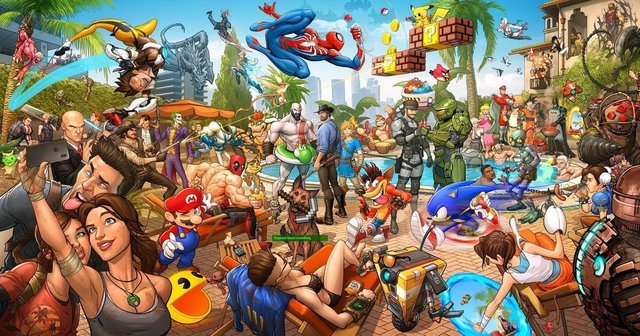

Gosto de socializar com amigos e familiares para assistir o jogo do meu time.
'Tu és time de tradição, raça, amor e paixão. Oh, meu Mengo!'
Um bom hobby para mim é jogar um jogo de video-game para relaxar.'A vida é igual um vídeo-game, cheio de
fases, algumas fáceis, outras nem tanto, mas com o tempo, nós conseguimos vencer!'

Gosto de pesquisar na internet projetos que vão do mais simples até o mais complexo como uma forma de me
ajudar no dia a dia em casa. Além dos benefícios que isso tem para nós, aprender coisas novas também é
uma forma de escaparmos um pouco da rotina!
Gosto também de assistir filmes e series para relaxar, conhecer novas culturas e historias…